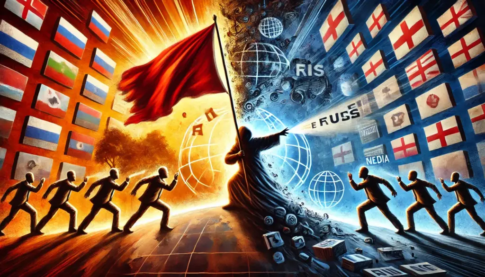

A Narrativa Distorcida de Donald Trump Sobre a Guerra na Ucrânia
Publicado em 2025-02-19 23:36:38

As recentes declarações de Donald Trump, sugerindo que a Ucrânia iniciou a guerra e que o presidente Volodymyr Zelensky é um "ditador", são profundamente problemáticas. Não apenas distorcem os fatos, mas também reverberam a propaganda russa. Analisemos essas afirmações e suas consequências.
1. A Ucrânia Não Começou a Guerra
Contexto histórico: O conflito teve início em 2014, com a anexação ilegal da Crimeia pela Rússia e o subsequente apoio russo a separatistas no leste da Ucrânia. Em fevereiro de 2022, a Rússia intensificou sua agressão com uma invasão em grande escala, sem provocação ucraniana.
Fatos incontestáveis: Organismos internacionais, como a ONU, a NATO e a União Europeia, reconhecem a Rússia como a agressora. A Ucrânia luta para preservar sua soberania e integridade territorial.
Propaganda russa: A ideia de que a Ucrânia iniciou a guerra é uma narrativa promovida pelo Kremlin para justificar sua invasão, travestindo-a de "operação especial" para "desnazificação" e proteção de russófonos. Tal discurso é amplamente refutado por especialistas e líderes globais.
2. Volodymyr Zelensky: Um Líder Democrático, Não um Ditador
Legitimidade eleitoral: Zelensky foi eleito democraticamente em 2019 com 73% dos votos, em eleição reconhecida como justa por observadores internacionais.
Atuação na guerra: Desde a invasão russa, ele se tornou um símbolo de resistência e unidade nacional, sem consolidar poderes ditatoriais, mas sim organizando a defesa do país.
Contraste com Putin: Diferentemente de Zelensky, Vladimir Putin governa a Rússia há mais de duas décadas, consolidando poder por meio de eleições questionáveis, repressão à oposição e controle midiático.
3. Os Perigos das Declarações de Trump
Propagação da desinformação russa: Ao repetir narrativas do Kremlin, Trump deslegitima o governo ucraniano e enfraquece os esforços internacionais contra a agressão russa.
Impacto na opinião pública: Afirmações como essas podem influenciar negativamente a percepção do conflito nos EUA, reduzindo o apoio à Ucrânia e fortalecendo posições isolacionistas.
Ameaça à segurança global: Minimizar a agressão russa contribui para a erosão da ordem internacional, que se baseia na soberania e na integridade territorial dos Estados.
4. O Que Motiva Trump?
Admiração por Putin: Trump já expressou elogios ao estilo autoritário do presidente russo, o que pode moldar sua postura em relação à Ucrânia.
Cálculo político: Ele pode estar buscando atrair setores de sua base eleitoral que são críticos ao envolvimento dos EUA em conflitos externos.
Influência da desinformação: É possível que Trump esteja simplesmente reproduzindo informações distorcidas oriundas de fontes pró-Rússia.
5. As Consequências Para os EUA e o Mundo
Desgaste da posição internacional dos EUA: Um ex-presidente dos EUA, ao adotar uma retórica alinhada à Rússia, compromete a credibilidade americana na defesa da democracia.
Impacto na Ucrânia: Discursos como esse podem enfraquecer o apoio ocidental ao país, afetando a ajuda militar e diplomática.
Normalização de narrativas antidemocráticas: Atacar um líder democraticamente eleito e justificar um regime autoritário contribui para a erosão dos princípios democráticos.
Conclusão
As declarações de Trump sobre a Ucrânia e Zelensky não só distorcem os fatos, mas também servem aos interesses da Rússia. Em um momento crítico para a ordem global, é essencial que líderes e cidadãos analisem criticamente tais discursos, combatendo a desinformação e defendendo os valores democráticos. A luta da Ucrânia não é apenas por sua soberania, mas também pela preservação de uma ordem mundial baseada em regras e respeito à liberdade.